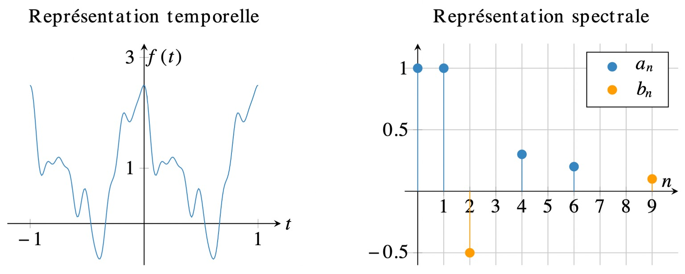
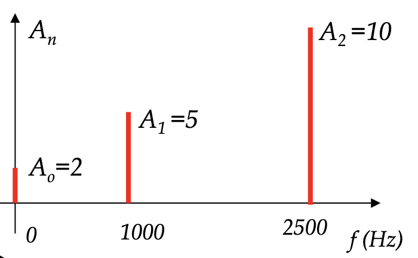
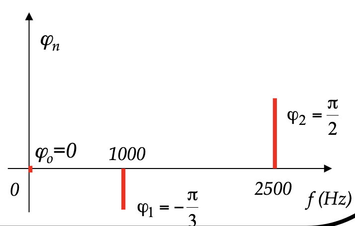

Série de Fourier#
Tout signal \(x(t)\) à temps continu et périodique de période \(T\) peut s’écrire comme une combinaison linéaire de fonctions \(\exp\left(j 2\pi k f_{0} t\right)\), qui sont elles-mêmes périodiques de période \(T\) :
où \(k \in \mathbb{Z}\) est la « fréquence » et \(X[k]\) sont des coefficients. L’ensemble de ces coefficients, noté simplement \(X\), est la série de Fourier de \(x\) ; c’est aussi un signal. On montre que les coefficients de la série de Fourier sont définis par :
Le terme \(k\) est appelé la \(k\)e harmonique. En particulier, le terme \(X[1]\) est la première harmonique, que l’on appelle aussi la « composante fondamentale » ou simplement fondamentale. Le terme \(X[0]\) correspond à la moyenne du signal :
Formulation alternative : Forme trigonométrique réelle
Parfois, la série de Fourier de signaux réels est définie comme l’ensemble des coefficients \(a_k\) et \(b_k\) tels que :
La relation entre ces coefficients \(a_k\) et \(b_k\) avec l’expression précédente de la série de Fourier est :
et la formule de la série de Fourier inverse devient :
Dans le cadre de ce module, nous n‚Äôutiliserons pas les formules faisant intervenir \(a_k\) et \(b_k\) car elles obligent √† effectuer deux fois plus de calculs qu‚Äôavec les formules pr√©c√©dentes utilisant \(X[k]\). En effet, la formulation avec l‚Äôexponentielle complexe regroupe les termes en cosinus et en sinus. C‚Äôest donc plus simple en complexe ! üòú
La représentation du spectre devient :

Ce qui n’est pas spécialement aisé à interpréter. Ce qui explique que nous n’utiliserons pas souvent cette forme.
Formulation alternative : Forme polaire
Il existe une 3e formulation : la forme polaire. La forme polaire de la série de Fourier permet d’obtenir directement l’amplitude et la phase des harmoniques.
où


Reconstruction
Une fonction périodique est complètement définie par ses coefficients de Fourier et sa période :
Si on conna√Æt \(X[k]\) et \(\omega_0\), on peut construire \(x(ùë°)\) en travaillant avec la forme complexe.
Si on conna√Æt \(ùëé_ùë£\), \(ùëé_ùëõ\), \(ùëè_ùëõ\) et \(\omega_0\), on peut construire \(x(ùë°)\) en travaillant avec la forme trigonom√©trique r√©elle.
Si on conna√Æt l‚Äôamplitude \(ùê¥_ùëõ\) et la phase \(\theta_ùëõ\), on peut construire \(x(ùë°)\) en travaillant avec la forme polaire.
Série de Fourier discrète#
De même que pour la série de Fourier, un signal à temps discret et périodique de période \(N\) peut s’écrire comme la combinaison linéaire de fonctions \(\exp\left(j\frac{2\pi k n}{N}\right)\), qui sont également périodiques de période \(N\) :
et :
Remarque   Un signal \(x[n]\) à durée limité (donc non défini en dehors de l’intervalle \(\{0,\dots,N-1\}\))
peut être vu comme un signal périodique de période \(N\).
Il possède donc une série de Fourier discrète qui s’appelle dans ce cas « transformée de Fourier discrète » (TFD).
Comme les signaux que l’on traite sur ordinateur sont toujours à durée limitée,
alors ce sera cette transformée de Fourier discrète qui sera calculée.
Il existe un algorithme très rapide pour la calculer : l’algorithme FFT
(implémenté en Python par exemple dans la fonction numpy.fft.fft).
Valeur RMS#
La valeur RMS d‚Äôun signal peut √™tre calcul√©e √† partir de la s√©rie de Fourier. On remplace la fonction \(ùëì(ùë°)\) par sa s√©rie de Fourier :
{kind=link}
Par contre, il est généralement plus simple de calculer la valeur RMS à partir de la fonction, plutôt que la série de Fourier.
Phénomène de Gibbs#
Le phénomène de Gibbs est l’apparition d’oscillations au abords des discontinuités d’un signal, lorsque celui-ci est reconstruit à partir des coefficients de sa série de Fourier. On comprend que si la reconstruction n’utilise qu’une partie des coefficients de la série de Fourier, alors le signal reconstruit sera différent du signal original. Lorsque le nombre de coefficients augmente, la reconstruction se rapproche du signal, sauf au discontinuités où il se produit des oscillations qui ne peuvent s’atténuer.
Reconstruction d’un créneau à partir de quelques coefficients de sa série de Fourier discrète.#